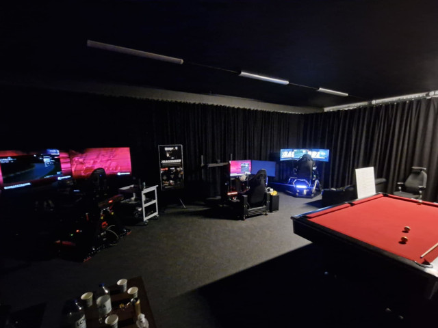
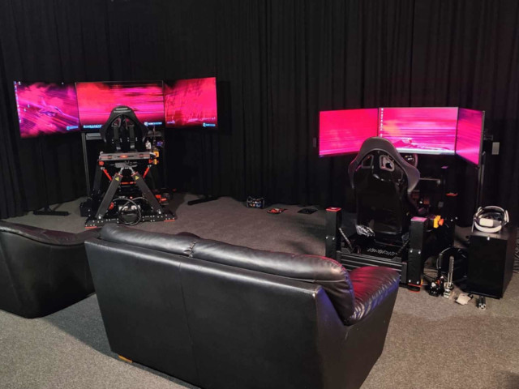
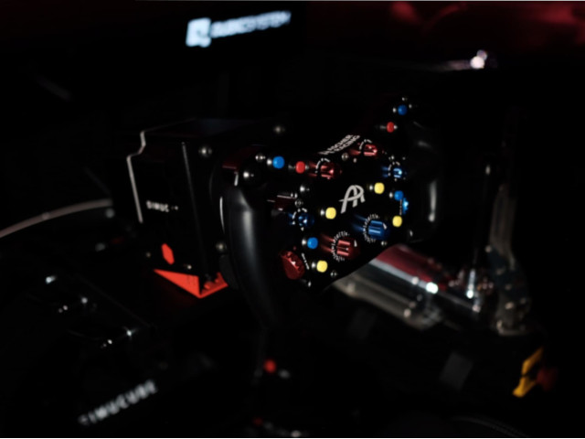

Boka lokal med racingsimulatorer för grupp
Att köra racingsimulator tillsammans med andra är en fartfylld aktivitet som kommer skapa minnen.
Vår lokal i Vetlanda passar perfekt för afterwork, teambuilding eller ett festligt häng med polarna.
Umgås, kör race och tävla om vem i gänget som är snabbast. I lokalen finns det tre racingsimulatorer, ett biljardbord samt soffor och bord.
Att hyra hela lokalen med samtliga maskiner för ett sällskap kostar 1500kr/h.
Kontakta Raceboden för att boka!

Boka racingsimulator
Ge dig själv en häftig upplevelse och boka en av våra racingsimulatorer. Är ni två som vill köra kan ni boka varsin.
Den som är nyfiken på att testa en specifik maskin har tre olika att välja mellan: Racemore 600s, Qubic System V20 och Simlab med Qubic Qs-220.
Priser varierar beroende på maskin och tid, från 500 kr/h till 700 kr/h.
Kontakta Raceboden för att boka en racingsimulator!

Boka racingsimulator som racingförare
Förbered dig inför en tävling eller underhåll dig under längre uppehåll från rallyn. Du som racingförare kan boka en simulator för att öva när du inte kan sitta i din egen bil på banan.
Vi är stolt sponsor till rallyföraren Marcus Karlsson som använder vår Racemore 600s för att vässa sina skills. Gör som Marcus och kom till oss för att öva.
Du kan välja tävlingsbana, bil och inställningar utifrån dina behov.
Kontakta Raceboden så tar vi fram ett förslag som passar dig!
